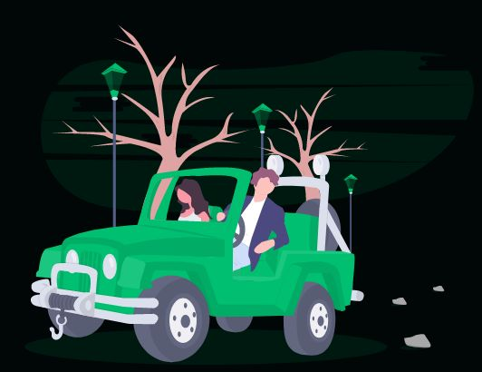

Cinnamon Bank
Web Design for a Virtual Bank.
Design Insights
- This is a website design for a digitally oriented start-up bank . The website uses a green and black theme and consists of the following sections: a navigation bar , hero section, 3 individual feature sections, an "our services" section, a detailed footer and a sign up page.
- The navigation bar is fixed and is visible for the entirety of the website. When items are clicked, the website scrolls smoothly to the required section and said section is underlined in the nav bar
- The image backgrounds and "feature" section colours are the same such that image boundaries are indistinguishable. All buttons change colour when hovered over and images in adjacent sections are placed at alternating sides to keep viewers more engaged. Click the image(or button) below to see the site.
Technical Summary
- All pictures are svg (scalable vector graphics) images gotten from unDraw.com’s green theme , to maintain resolution at any screen size.
- React components make use of react's styled components, which integrate css with react and media queries are used to keep the elements responsive at different screen widths.
- The sign in page is visible when the sign in button is clicked and a useState hook is used to change the piece of state that determines whether the sign in page should be visible or not .